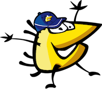

Romont

« Quartier Libre, c’est ...
du spectacle en live, des rires,
parfois des effets spéciaux ! une équipe en délire
du sport, des bricolages
des versets bibliques,
des trucs super importants pour toute ta vie! des concours, des prix à gagner
et pleins de copains à rencontrer.
Et ça, tous les mois, prêt de chez toi ! »
...
Présentation de l’équipe en quelques mots
Nous sommes une équipe dynamique, créative et motivée. Nous désirons nous mettre aux services de vos enfants en leur proposant un cadre ludique et créatif, dans lequel nous souhaitons partager avec eux joie et bonne humeur.
Nous leur offrons la possibilité de redécouvrir les valeurs chrétiennes, telles que le respect, l’estime de soi et la bienveillance dans un contexte d’animations sociocultuelles.
Nous désirons soutenir la famille dans sa démarche de sensibilisation sur les sujets tels que: le vol; la politesse; la différence physique et contribuer à l’épanouissement de l’enfant au sein de la société.
Vous trouverez plus d’informations sur :
www.fabricantsdejoie.ch/quartier-libre
Rachel Beuret 079 837 43 04
info@quartierlibreromont.ch